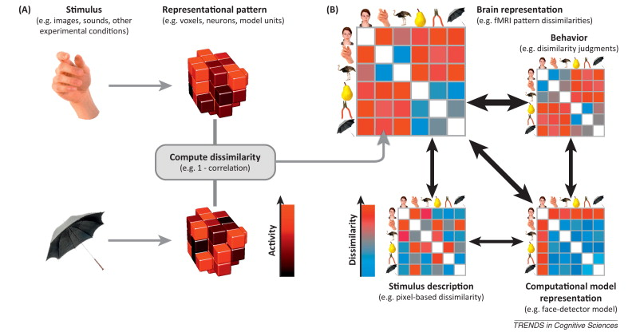
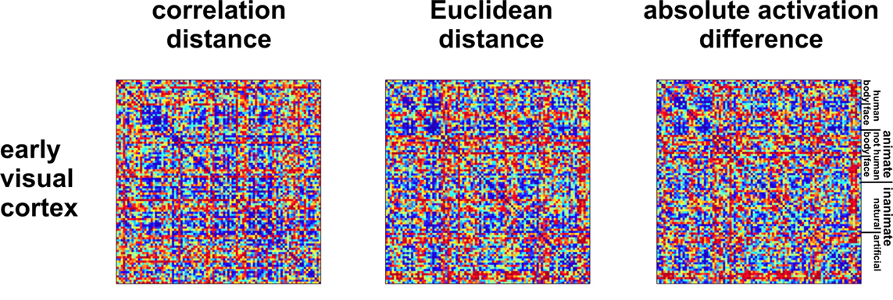
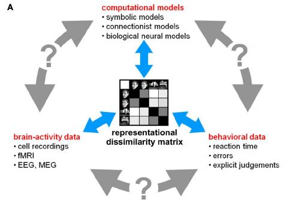
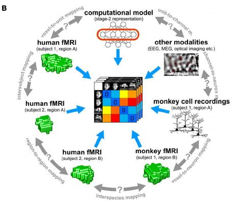
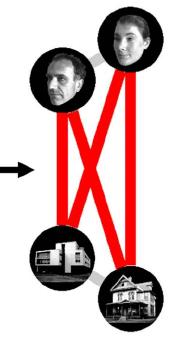
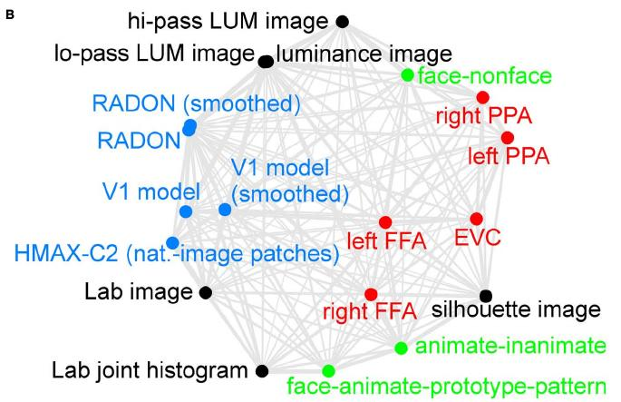
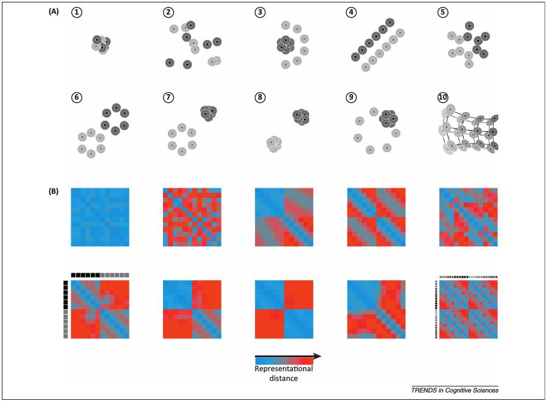
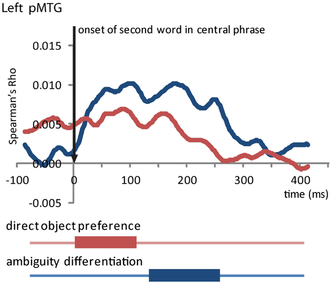

Neuroscientific theory must abstract from the idiosyncrasies of particular empirical modalities. To this end, we need a modality-independent way of characterizing a brain region’s representation. ... One way of characterizing the information a brain region represents is in terms of the mental states (e.g., stimulus percepts) it distinguishes.
RSA
Interpret brain data pattern as representation of stimulus
Compare those patterns between pairs of stimuli
Assumes (dis)similar content should manifest (dis)similarly in the brain
Inference based on comparisons of dissimilarity
Between brain regions
Between model and brain data
Between subjects
RSA

Kriegeskorte & Kievit, 2013: Box 1 Figure 1
Representational Dissimilarity Matrix
Each cell shows dissimilarity between two items
Usually correlation distance ($1-r$)
Distance metric matters (we'll return to this)
Symmetric about diagonal of zeros

Kriegeskorte et al., 2008: Fig. 10
RDMs
We can also build RDMs from:
Models
Categorical (similar or not?)
Feature-vectors
Computational models
One-at-a-time variables (magnitude difference)
Behavioral Data
Similarity judgments
RT / Accuracies

Quantitative relationships between stimuli
Modality-independent
Kriegeskorte et al., 2008: Fig. 3A
Comparing RDMs
RDMs can be quantitatively compared with the same distance metrics
Use only upper (or lower) triangle of each RDM ($\binom{N}{2}$ unique pairs)
Calculate correlation between them (Pearson, Spearman, etc.)
Significance Testing
RDM Permutation
Permute columns of one RDM; recalculate correlation
Bootstrap
Remake both RDMs by sampling (with replacement) original conditions; recalculate correlation
Permutation Cluster Tests
(Spatio)temporal clusters where correlation > 0 across group
WHAT'S IT GOOD FOR?
Common Ground
Interface for any modality assuming same stimulus set

Kriegeskorte et al., 2008: Fig. 3B
Visualization with MDS
Dimensionality reduction to view relationships in 2D

Within-RDM
Kriegeskorte et al., 2008: Fig. 2 (partial)

Between-RDM
Kriegeskorte et al., 2008: Fig. 9B
Not good for...
...linear modeling of brain activity.
...exploratory designs.
...testing many continuous variables.
Good for...
...experiments with strong priors about how stimuli/conditions will pattern.
...comparing specific theoretical/computational accounts.
...identifying neural correlates of behavioral effects.
Pattern-sensitivity

Kriegeskorte & Kievit, 2013: Figure 1
Pattern insensitivity
Signals can be perfectly correlated and have different magnitudes
Not "dissimilar" according to $1-r$
Need other distance measure (Euclidean, etc.)
HOW DO WE USE IT?
ROI: Temporal Searchlight
Time series of RDMs
Multivariate! Use all sources in ROI instead of averaging
Sliding time window
At each timepoint:
By-item vectors with length (sources x window size)
Build data RDM
Calculate correlation with model RDM

Tyler et al., 2013: Fig. 6B
Spatiotemporal Searchlight
RDMs over space and time
Data within spatial radius and temporal window of source-timepoint
Spatiotemporal map of model-brain correlations
Significance Testing
Random-effects
Permute sign of correlation 10,000 times; build null distribution of largest clusters
(Su et al., 2012; Tyler et al., 2013)
Fixed-effects
Permute data RDM columns at each (source-)timepoint
Recalculate correlations; build null distribution of largest clusters